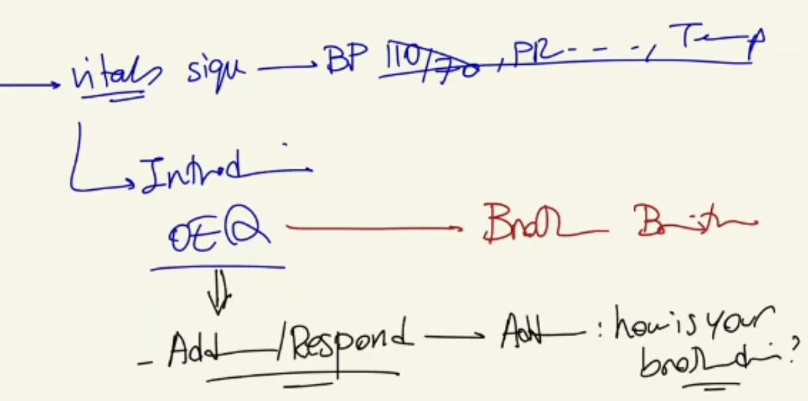
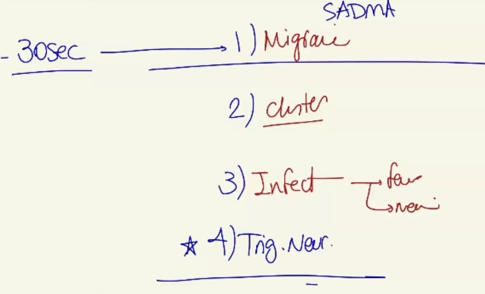
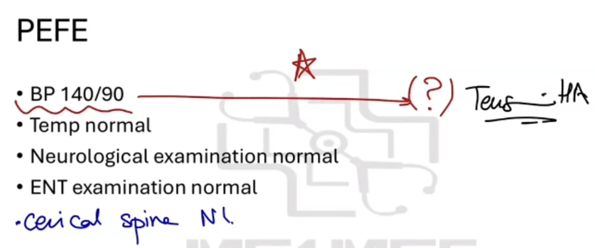
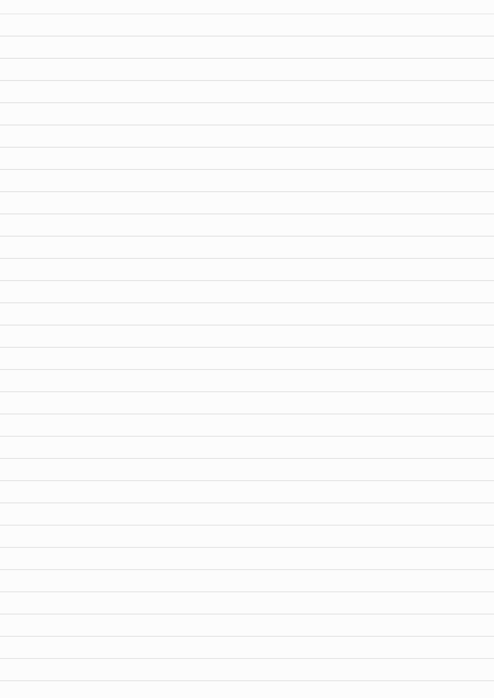
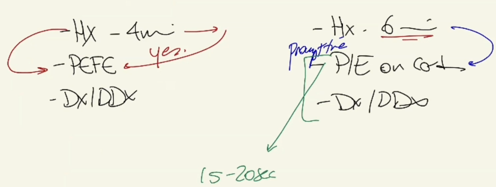

Tension Headache - History Taking
Source: Dr. Amir workshop — Med workshop 2 - 2026 / CLASS 1 HEADACHE (Aug 2026 drop) · Specialty: neurology
Approach and Opening
Brainstorm the differential, then map which components fit into a 4-minute history: introduction, haemodynamic stability, open-ended question, pain assessment (SIQORAA), red flags, provisional diagnosis, rule out differentials, and (if time) closure. Omitting the brain-tumour red flags fails the case.
The classic presentation: a patient whose brother was recently diagnosed with a brain tumour and who fears the same because he has similar headaches. Respond to the concern, ask how the brother is doing (he is being treated and is well), then bridge to the history: "I'll ask a few questions, examine you, find the cause and make the best plan together."
Pain Characteristics (SIQORAA)
- Site: all over the head, bilateral, and forehead.
- Intensity: 5/10.
- Quality: a tight band, pressure-like, heaviness.
- Onset: 6 months, about once a week, not worsening.
- Radiation: to the neck and back of the head.
- Alleviating/aggravating: better with paracetamol.
- Affect on life: not affecting work or home function; the main issue is worry about the brother.
Bilateral, tight, pressure-like headache radiating to the neck and relieved by paracetamol gives a provisional diagnosis of tension headache.
Provisional Diagnosis - Stress Assessment
Screen for stress: home (who he lives with, home stressors), work (occupation, workload) — he is an overworked, stressed accountant — plus mood and sleep.
Red Flags and Rapid Differentials
Red flags: pain waking at night; early-morning headache with vomiting; worse with coughing/sneezing; neurological deficit (weakness, numbness, blurred vision, loss of weight). Family history need not be re-asked as the brother's tumour is already known.
Rapid differentials (1-2 questions each): migraine, cluster headache, infection (fever for meningitis; sore neck also excludes cervicogenic), trigeminal neuralgia, and trauma if time allows.
Physical Examination
General appearance (alert, no rash, no ptosis); vital signs (BP 140/90, temperature normal); neurological examination including fundoscopy (normal), upper and lower limbs (normal); ENT (throat/post-nasal drip, sinus tenderness, dental — normal); cervical spine palpation and neck movements (normal). A mildly elevated BP of 140/90 does not indicate a hypertension-induced headache — that occurs only in malignant hypertension (urgency >180, emergency >220). Therapeutic Guidelines note that anxiety, pain or stress raise blood pressure, so the diagnosis remains tension headache.
Diagnosis and Differential Explanation
Diagnosis: tension headache — a stress-related headache with tightening/contraction of the neck muscles. Reasons: bilateral pressure-like quality plus identified stressors (work, and the brother's condition). Address the brain-tumour concern (no symptoms, no neurological deficit, no weight loss, normal examination). Note the slightly high BP is unlikely to cause headache. Then list differentials: cervicogenic headache (normal neck exam), migraine (no light/noise sensitivity or aura), infection/meningitis (no fever), and briefly trigeminal neuralgia, referred pain (eye, MSK), medication overuse, shingles and BIH.
Variants (2025 Stress Case and Overlapping Neck-Pain Case)
2025 stress variant: a stressed patient (e.g. worried about a son's career choice); the structure is unchanged — obtain tension-headache characteristics, assess stress, exclude red flags and cover a good differential.
August 2025 overlap variant: combined MSK/headache case. Choose headache as the dominant complaint. For neck pain, do the key MSK components rather than full SIQORAA: radiation (arm radiation suggests radiculopathy), alleviating/aggravating factors, and mechanical versus inflammatory pattern (worse with activity = mechanical/OA; worse in the morning/with rest = inflammatory, e.g. rheumatoid or ankylosing spondylitis). Include neck-pain differentials: malignancy/metastasis to bone, infection (osteomyelitis, epidural abscess, septic arthritis), arthritis (OA/RA), spinal canal stenosis, cervical radiculopathy and myelopathy (red flag). Paravertebral tenderness supports a musculoskeletal/tension origin.
Case Figures
















🔬 Expert Review & Enhancements
Reviewed by: history-taking-expert (Australian clinical supervisor) · fact-checked against the irStudy medical textbook RAG index.
✏️ Corrections
The correct term is medication-overuse headache (rebound headache from frequent analgesic/triptan use), not 'medication overdose'. Define thresholds: simple analgesics on fewer than 15 days/month and triptans/opioids/combination analgesics on fewer than 10 days/month.
This is correctly resolved in the notes but should be stated firmly: headache is attributable to hypertension only in a hypertensive emergency (typically SBP >180-220 with end-organ features). 140/90 is stage-1 hypertension and does not cause acute headache; document it for cardiovascular risk (absolute CVD risk assessment) rather than as the cause.
⭐ Suggested Enhancements
🏷️ Metadata
📚 Reference Citations (RAG)
John Murtagh General Practice, 8th Edition.pdf p.index (p3506) qdrant:49c4b3d3-27b0-4efa-9edf-bcb12fc27cb0
John Murtagh General Practice, 8th Edition.pdf p.index (p3553) qdrant:a0290514-fea4-47e3-9ff5-1b08dcc4c0e2
John Murtagh General Practice, 8th Edition.pdf p.index (p3614) qdrant:058f9e82-d886-453b-9e2e-c5c6bd699d07